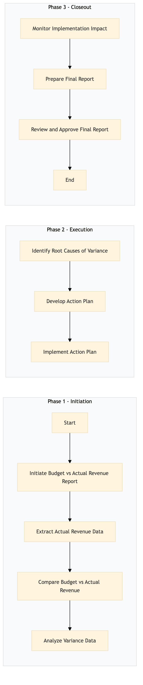

| Role | Steps |
|---|---|
| Revenue Manager | 1.1 1.2 1.3 1.4 2.1 2.2 2.3 3.1 3.2 3.3 |
| Yield Management Analyst | 1.4 2.1 2.2 2.3 3.1 3.2 |
| Front Desk Agent | 2.3 |
| Step | Name | Role | System | Input | Output | KPI | Dec? | Exc? | Pain Point / Risk |
|---|---|---|---|---|---|---|---|---|---|
| 1.1 | Initiate Budget vs Actual Revenue Report | Revenue Manager | Oracle OPERA Cloud | Monthly/Quarterly budget data, actual revenue data from Oracle OPERA Cloud | Report initiation log | Less than 1 hour | N | Y | Data availability issues from Oracle OPERA Cloud |
| 1.2 | Extract Actual Revenue Data | Revenue Manager | Oracle OPERA Cloud | None | Actual revenue data file | Less than 30 minutes | N | Y | Data extraction errors from Oracle OPERA Cloud |
| 1.3 | Compare Budget vs Actual Revenue | Revenue Manager | Microsoft Excel | Budget data, actual revenue data file | Initial variance report | Less than 2 hours | N | Y | Manual comparison errors |
| 1.4 | Analyze Variance Data | Revenue Manager | Microsoft Excel, IDeaS G3 RMS | Initial variance report | Detailed variance analysis report | Less than 4 hours | N | Y | Complex data interpretation |
| 2.1 | Identify Root Causes of Variance | Revenue Manager, Yield Management Analyst | IDeaS G3 RMS | Detailed variance analysis report | Root cause identification document | Less than 5 hours | N | Y | Lack of historical data for comparison |
| 2.2 | Develop Action Plan | Revenue Manager, Yield Management Analyst | Microsoft Excel | Root cause identification document | Action plan document | Less than 3 hours | N | Y | Resource allocation for action items |
| 2.3 | Implement Action Plan | Revenue Manager, Yield Management Analyst, Front Desk Agent | Oracle OPERA Cloud, SynXis CRS | Action plan document | Implementation log | Less than 2 days | Y | Y | Resistance to change among staff |
| 3.1 | Monitor Implementation Impact | Revenue Manager, Yield Management Analyst | Oracle OPERA Cloud, Microsoft Excel | Action plan document, implementation log | Impact monitoring report | Less than 1 hour per week | Y | Y | Inaccurate data entry in Oracle OPERA Cloud |
| 3.2 | Prepare Final Report | Revenue Manager, Yield Management Analyst | Microsoft Excel, Microsoft Word | Impact monitoring report | Final budget vs actual revenue variance report | Less than 4 hours | N | Y | Formatting issues in final report |
| 3.3 | Review and Approve Final Report | General Manager, Revenue Manager | Microsoft Word | Final budget vs actual revenue variance report | Approved final report | Less than 2 hours | Y | N | Approval delays due to conflicting priorities |
This process involves analyzing and reporting on the variance between budgeted and actual revenue at a Marriott full-service hotel. It helps in identifying discrepancies and taking corrective actions to improve financial performance.